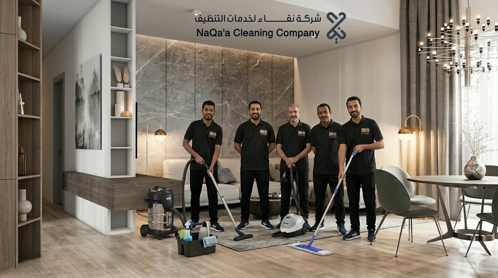

شركة تنظيف بالرياض تقدم خدمات احترافية لجميع أنواع التنظيف
عندما يبحث العملاء عن شركة تنظيف بالرياض فإنهم لا يبحثون فقط عن عمالة تقوم بأعمال النظافة التقليدية، بل يبحثون عن شركة تمتلك الخبرة والمعدات والقدرة على تقديم نتائج احترافية تحافظ على نظافة المنازل والفلل والشقق والمكاتب والمنشآت التجارية. ومع التطور الكبير الذي تشهده مدينة الرياض وزيادة عدد الأحياء والمشاريع السكنية والتجارية، أصبحت الحاجة إلى خدمات التنظيف الاحترافية أكبر من أي وقت مضى.
تعد شركة نقاء لخدمات التنظيف من الشركات التي تهتم بتقديم حلول تنظيف متكاملة تناسب مختلف احتياجات العملاء في مدينة الرياض. كما تعمل شركة نقاء للتنظيف على توفير خدمات متنوعة تشمل تنظيف المنازل والفلل والشقق والمجالس والكنب والسجاد والخزانات والمكاتب وغيرها من الخدمات التي يحتاجها العملاء بشكل يومي أو دوري.
ويلاحظ أن الكثير من العملاء يفضلون التعامل مع شركة تنظيف بالرياض تمتلك سجلًا جيدًا في تنفيذ الأعمال وتقديم ضمان على جودة الخدمة والالتزام بالمواعيد. ولهذا أصبحت المنافسة بين شركات التنظيف تعتمد على جودة التنفيذ أكثر من أي عامل آخر.

لماذا يحتاج سكان الرياض إلى شركة تنظيف بشكل مستمر؟
تتميز مدينة الرياض بطبيعتها المناخية الخاصة، حيث تتعرض بعض المناطق لموجات غبار وأتربة بشكل متكرر، وهو ما يؤدي إلى تراكم الأوساخ داخل المنازل والفلل والشركات والمكاتب.
كما أن نمط الحياة السريع يجعل الكثير من الأسر غير قادرة على تخصيص الوقت الكافي لأعمال التنظيف العميق، مما يدفعها إلى الاستعانة بخدمات شركة تنظيف بالرياض للحصول على نتائج احترافية وتوفير الوقت والجهد.
وتساعد خدمات التنظيف الاحترافية على:
- تحسين جودة البيئة الداخلية
- المحافظة على الأثاث
- تقليل تراكم الغبار
- تحسين المظهر العام للمكان
- توفير الوقت لأفراد الأسرة
- رفع مستوى الراحة داخل المنزل أو المنشأة
شركة تنظيف منازل بالرياض وأهمية التنظيف الاحترافي
يعتبر المنزل من أكثر الأماكن التي تحتاج إلى العناية المستمرة بالنظافة، حيث تقضي الأسرة معظم وقتها داخله. ولذلك يبحث الكثير من العملاء عن شركة تنظيف منازل بالرياض قادرة على تنفيذ أعمال التنظيف الشامل بدقة واحترافية.
تشمل خدمات تنظيف المنازل عادة:
- تنظيف الأرضيات
- تنظيف الغرف
- تنظيف المطابخ
- تنظيف دورات المياه
- تنظيف النوافذ والأبواب
- إزالة الأتربة
- التعقيم والتطهير
وتسعى شركة نقاء لخدمات التنظيف إلى تقديم حلول مناسبة لمختلف أنواع المنازل سواء كانت شققًا صغيرة أو منازل مستقلة أو وحدات سكنية كبيرة. كما تهتم الشركة بتوفير فرق عمل مدربة تستطيع التعامل مع مختلف أنواع الأسطح والخامات دون التسبب في أي أضرار.
أفضل شركة تنظيف بالرياض لتنظيف الفلل والقصور
تحتاج الفلل والقصور إلى مستوى خاص من العناية بسبب مساحتها الكبيرة وتعدد المرافق الموجودة داخلها. ولذلك يفضل الكثير من الملاك التعاقد مع شركة تنظيف بالرياض تمتلك الخبرة الكافية في التعامل مع هذا النوع من العقارات.
تشمل أعمال تنظيف الفلل:
- تنظيف المجالس وغرف النوم والمطابخ
- تنظيف الحدائق الخارجية
- تنظيف النوافذ الزجاجية
- تنظيف السلالم والأرضيات الرخامية
وتوفر شركة نقاء برامج تنظيف دورية للفلل تساعد على المحافظة على مستوى عالٍ من النظافة طوال العام. كما تقدم خدمات تنظيف عميق قبل المناسبات أو بعد الانتقال إلى العقار أو بعد أعمال الصيانة والتجديد.
شركة نظافة بالرياض لتنظيف المجالس والكنب والسجاد
تعتبر المجالس من أكثر الأماكن أهمية داخل المنازل السعودية، حيث تستقبل الضيوف والزوار بشكل مستمر. لذلك تحرص شركة نقاء على تقديم خدمات متخصصة لتنظيف المجالس تشمل: تنظيف الكنب، الستائر، السجاد، الطاولات، إزالة البقع، والتعقيم. كما تعتمد على معدات حديثة تساعد على تنظيف المجالس دون التأثير على جودة الأثاث أو الأقمشة.
تنظيف الكنب بالبخار بالرياض
يعد الكنب من أكثر قطع الأثاث استخدامًا داخل المنزل، ويحتاج إلى تنظيف دوري للحفاظ على مظهره ونظافته. وتوفر شركة تنظيف بالرياض خدمات تنظيف الكنب باستخدام البخار للمساعدة على: إزالة البقع، التخلص من الروائح، تنظيف الأقمشة بعمق، تحسين المظهر العام، والمحافظة على عمر الكنب.
تنظيف السجاد والموكيت
السجاد والموكيت يجمعان الأتربة بشكل كبير مع مرور الوقت حتى لو بدا السطح نظيفًا من الخارج. ولهذا تقدم شركة نقاء خدمات تنظيف احترافية تساعد على إزالة الأوساخ العميقة والبقع المختلفة باستخدام تقنيات حديثة تحافظ على الألوان والخامات.
أسعار خدمات التنظيف بالرياض
تختلف الأسعار حسب نوع الخدمة والمساحة المطلوبة. فيما يلي جدول أسعار استرشادي:
جدول الأسعار الاسترشادي — الجزء الأول
| الخدمة | السعر التقريبي |
|---|---|
| تنظيف شقة صغيرة | 300 ريال |
| تنظيف شقة متوسطة | 450 ريال |
| تنظيف منزل كامل | 800 ريال |
| تنظيف فيلا صغيرة | 800 ريال |
| تنظيف فيلا كبيرة | 1,500 ريال |
| تنظيف مجلس | 250 ريال |
| تنظيف كنب بالبخار | 300 ريال |
| تنظيف سجاد | 200 ريال |
| تنظيف موكيت | 250 ريال |
| تنظيف خزان أرضي | 350 ريال |
| تنظيف خزان علوي | 250 ريال |
| عزل خزان أرضي | من 800 ريال |
كيف تختار أفضل شركة تنظيف بالرياض؟
عند اختيار شركة تنظيف بالرياض يفضل التركيز على عدة عوامل مهمة:
- الخبرة والتقييمات
- الالتزام بالمواعيد
- جودة المعدات والمواد
- الضمان على الخدمة
- خدمة العملاء
- تنوع الخدمات والأسعار المناسبة
💡 تحرص شركة نقاء لخدمات التنظيف على توفير جميع هذه العناصر من أجل تقديم تجربة مميزة للعملاء في مختلف مناطق الرياض.
شركة تنظيف بالرياض لخدمات تنظيف المكاتب والشركات
تعتمد الشركات الحديثة على بيئة عمل نظيفة ومنظمة تساعد الموظفين على التركيز والإنتاجية. ولهذا السبب تلجأ العديد من المؤسسات إلى التعاقد مع شركة تنظيف بالرياض تقدم خدمات احترافية للمكاتب والمنشآت التجارية بمختلف أحجامها.
تقدم شركة نقاء برامج تنظيف دورية للمكاتب تشمل:
- تنظيف المكاتب الإدارية وقاعات الاجتماعات
- تنظيف الممرات والاستراحات
- تنظيف الزجاج الداخلي والخارجي
- تنظيف دورات المياه
- تنظيف مناطق الاستقبال
- التعقيم والتطهير
كما توفر الشركة خدمات تنظيف متخصصة للشركات التي تحتاج إلى برامج يومية أو أسبوعية أو شهرية، مع إمكانية تخصيص خطة عمل تناسب طبيعة النشاط التجاري.
شركة تنظيف بالرياض لتنظيف المدارس والمؤسسات التعليمية
تحتاج المدارس إلى مستوى عالٍ من النظافة بسبب الأعداد الكبيرة من الطلاب والمعلمين الذين يستخدمون المرافق التعليمية بشكل يومي. وتقدم شركة نقاء حلولًا متخصصة تشمل:
- تنظيف الفصول الدراسية والمختبرات
- تنظيف المكاتب الإدارية والساحات
- تنظيف المقاصف ودورات المياه
- تعقيم الأسطح بمواد مناسبة وآمنة
شركة نظافة بالرياض لتنظيف المساجد
تحتل المساجد مكانة خاصة لدى المجتمع، ولذلك تحتاج إلى مستوى متميز من العناية والنظافة بشكل مستمر. وتوفر شركة نظافة بالرياض خدمات تنظيف المساجد التي تشمل: تنظيف السجاد، المداخل، النوافذ، دورات المياه، أماكن الوضوء، والتعقيم. وتحرص شركة نقاء على تنفيذ هذه الأعمال بأعلى درجات العناية مع تقديم عروض خاصة للعقود الدورية.
شركة تنظيف بالرياض لتنظيف المطاعم والكافيهات
تعتمد المطاعم والكافيهات بشكل كبير على النظافة لأنها تؤثر بشكل مباشر على تجربة العملاء وسمعة المنشأة. تشمل الخدمات: تنظيف الصالات، الطاولات والكراسي، الأرضيات، الواجهات الزجاجية، المطابخ، والتعقيم. وتقدم شركة نقاء برامج خاصة وعقودًا دورية تضمن استمرار النظافة دون انقطاع.
شركة تنظيف منازل بالرياض لتنظيف وعزل الخزانات
يعتبر تنظيف الخزانات من الخدمات المهمة التي تساعد على المحافظة على جودة المياه المستخدمة داخل المنازل والمنشآت. تشمل الخدمة:
- تنظيف الخزانات الأرضية والعلوية
- إزالة الرواسب والتعقيم
- فحص حالة الخزان
- عزل الخزانات لمنع التسربات ونمو الطحالب
- حماية الخزان من التأثيرات الخارجية
- إطالة العمر الافتراضي للخزان
وتحرص شركة نقاء على استخدام مواد مناسبة وآمنة أثناء تنفيذ أعمال التنظيف والعزل، مع توفير برامج دورية للمحافظة على جودة المياه بشكل مستمر.
شركة تنظيف بالرياض لخدمات التنظيف بعد التشطيب
بعد الانتهاء من أعمال البناء أو التجديد تظهر الحاجة إلى تنظيف احترافي لإزالة مخلفات العمل والغبار المتراكم. تشمل أعمال التنظيف بعد التشطيب:
- إزالة بقايا الدهانات والغبار
- تنظيف الأرضيات والنوافذ والأبواب
- تنظيف المطابخ والحمامات بالكامل
- تجهيز الموقع للاستخدام والسكن
شركة نظافة بالرياض وعقود التنظيف الدورية
الكثير من العملاء يفضلون الاشتراك في عقود تنظيف دورية بدلًا من طلب الخدمة بشكل منفصل في كل مرة. وتوفر شركة نظافة بالرياض عدة خيارات:
العقود اليومية
مناسبة للشركات والمطاعم والمنشآت ذات الاستخدام المكثف
العقود الأسبوعية
مناسبة للمنازل والفلل التي تحتاج إلى متابعة دورية
العقود الشهرية
تساعد على المحافظة على مستوى ثابت من النظافة طوال الشهر
العقود السنوية
خيار اقتصادي للمنشآت الكبيرة والمؤسسات التعليمية والتجارية
وتوفر شركة نقاء لخدمات التنظيف حلولًا مرنة تناسب مختلف الاحتياجات مع إمكانية تخصيص برامج مناسبة لكل عميل وفق طبيعة الموقع ومتطلبات العمل.
الضمان المقدم من شركة نقاء لخدمات التنظيف
من أهم الأمور التي يبحث عنها العملاء عند التعاقد مع شركة تنظيف بالرياض هو وجود ضمان حقيقي على جودة الخدمة. ويشمل الضمان:
- متابعة جودة التنفيذ
- استقبال الملاحظات ومراجعة الخدمة عند الحاجة
- الحرص على رضا العميل الكامل
- بناء علاقات طويلة الأمد قائمة على الثقة والالتزام
خدمات التعقيم والتطهير بالرياض
إلى جانب خدمات التنظيف التقليدية، أصبحت خدمات التعقيم جزءًا مهمًا من الحفاظ على بيئة صحية وآمنة. وتقدم شركة تنظيف بالرياض خدمات تعقيم للمنازل والمكاتب والمدارس والمطاعم والكافيهات تشمل: الأسطح، الطاولات، الأبواب، دورات المياه، ومناطق الاستخدام المشترك — باستخدام مواد تعقيم مناسبة ومصرح بها.
الفرق بين التنظيف العادي والتنظيف الاحترافي
يعتقد بعض الأشخاص أن التنظيف الاحترافي لا يختلف كثيرًا عن التنظيف التقليدي، لكن الواقع يوضح وجود فروق كبيرة بين النوعين:
❌ التنظيف التقليدي
- أدوات منزلية بسيطة
- وقت محدود
- تنظيف الأسطح الظاهرة فقط
- عدم الوصول للأماكن المخفية
✔ التنظيف الاحترافي
- معدات متخصصة وحديثة
- مواد تنظيف احترافية
- تنظيف عميق للأسطح والمرافق
- إزالة البقع الصعبة والتعقيم
خدمات التنظيف التي يحتاجها معظم سكان الرياض
تنظيف المنازل والشقق
من أكثر الخدمات طلبًا نظرًا لاحتياج المنازل إلى تنظيف دوري ومستمر.
تنظيف الفلل
تتطلب مساحات أكبر وجهدًا إضافيًا للحفاظ على مستوى النظافة المطلوب.
تنظيف المجالس والكنب
أكثر الأماكن التي تحتاج إلى عناية خاصة بسبب كثرة الاستخدام والضيافة.
تنظيف السجاد والموكيت
يساهم في التخلص من الأتربة المتراكمة وتحسين جودة الهواء داخل المنزل.
تنظيف الخزانات
يحافظ على جودة المياه وسلامة استخدامها اليومي.
تنظيف المكاتب والشركات
يوفر بيئة عمل مريحة ومنظمة للموظفين والعملاء.
تنظيف المساجد
خدمة تليق بقدسية المكان مع خصومات خاصة للعقود الدورية.
تنظيف المدارس
بيئة تعليمية نظيفة وصحية للطلاب والمعلمين طوال العام.
تنظيف المطاعم والكافيهات
نظافة تنعكس على تجربة العميل وتقييمات المنشأة.
تنظيف بعد التشطيب
تجهيز كامل للمشاريع الجديدة بعد أعمال البناء والتجديد.
جدول الأسعار الموسع لجميع خدمات التنظيف بالرياض
جدول أسعار استرشادي شامل — يتم تحديد السعر النهائي بعد المعاينة المجانية:
جدول الأسعار الشامل — شركة نقاء للتنظيف بالرياض
| الخدمة | التفاصيل | السعر التقريبي |
|---|---|---|
| تنظيف شقة غرفة وصالة | تنظيف كامل | 350 ريال |
| تنظيف شقة غرفتين وصالة | تنظيف كامل | 500 ريال |
| تنظيف شقة ثلاث غرف وصالة | تنظيف كامل | 600 ريال |
| تنظيف منزل كامل | شامل | 850 ريال |
| تنظيف فيلا صغيرة | حتى 300م² | 800 ريال |
| تنظيف فيلا متوسطة | 300 — 500م² | 1,200 ريال |
| تنظيف فيلا كبيرة | أكثر من 500م² | 1,800 ريال |
| تنظيف مجلس | خدمة مستقلة | 250 ريال |
| تنظيف مجلسين | خدمة مستقلة | 450 ريال |
| تنظيف كنب بالبخار | 4-6 قطع | 300 ريال |
| تنظيف سجاد | لكل قطعة | 200 ريال |
| تنظيف موكيت | لكل قطعة | 250 ريال |
| تنظيف خزان علوي | تنظيف وتعقيم | 250 ريال |
| تنظيف خزان أرضي | تنظيف وتعقيم | 350 ريال |
| تنظيف مكتب صغير | حتى 100م² | 300 ريال |
| تنظيف مكتب كبير | أكثر من 100م² | 700 ريال |
| تنظيف مدرسة | حسب الفصول | من 1,500 ريال |
| تنظيف مطعم | حسب المساحة | من 600 ريال |
| تنظيف كافيه | حسب المساحة | من 350 ريال |
| تنظيف بعد التشطيب | شقق وفلل | من 700 ريال |
| التعقيم الشامل | أي موقع | من 500 ريال |
✅ تنبيه: جميع الأسعار السابقة استرشادية — يتم تحديد السعر النهائي بعد المعاينة المجانية بدون أي إضافات أو مفاجآت.
نصائح للحفاظ على نظافة المنزل لفترات أطول
حتى بعد الاستعانة بخدمات شركة تنظيف بالرياض، هناك بعض الخطوات التي تساعد على المحافظة على النتائج لفترة أطول:
التهوية اليومية
تساعد على تحسين جودة الهواء وتقليل تراكم الروائح والأتربة داخل المنزل.
تنظيف البقع فور ظهورها
كلما تم التعامل مع البقع بشكل أسرع كانت عملية إزالتها أسهل وأقل تكلفة.
تنظيف السجاد بشكل دوري
يمنع تراكم الأتربة ويحافظ على المظهر العام ويقلل من الحساسية.
ترتيب الأثاث بشكل مستمر
يساعد على تسهيل أعمال التنظيف الدورية وتقليل الوقت المطلوب.
جدولة التنظيف الاحترافي الدوري
الاستفادة من خدمات شركة تنظيف منازل بالرياض بشكل دوري تساعد على المحافظة على مستوى ثابت من النظافة دون الحاجة إلى انتظار تراكم الأوساخ.
شركة تنظيف بالرياض في جميع أحياء الرياض
تغطي خدمات شركة نقاء للتنظيف مختلف مناطق العاصمة:
شمال الرياض
شرق الرياض
غرب الرياض
جنوب الرياض
لماذا يختار العملاء شركة نقاء لخدمات التنظيف؟
استطاعت شركة نقاء لخدمات التنظيف أن تبني سمعة قوية بين العملاء من خلال التركيز على الجودة والالتزام والاهتمام بالتفاصيل. ومن أهم المزايا:
- فريق عمل مدرب ومعدات حديثة
- أسعار مناسبة وخدمات متنوعة
- تغطية واسعة لجميع أحياء الرياض
- سرعة التنفيذ وخدمة عملاء متميزة
- حلول تنظيف متكاملة تناسب جميع الاحتياجات
- ضمان على الجودة ومتابعة ما بعد الخدمة
الأسئلة الشائعة حول شركة تنظيف بالرياض
نصائح قبل التعاقد مع شركة تنظيف بالرياض
قبل اختيار شركة تنظيف بالرياض يفضل التأكد من:
- خبرة الشركة وتقييمات العملاء السابقين
- وضوح الأسعار قبل البدء بالعمل
- وجود ضمان حقيقي على الخدمة
- نوعية المعدات والمواد المستخدمة
- سرعة الاستجابة والالتزام بالمواعيد
- تنوع الخدمات التي تقدمها الشركة
خلاصة — شركة تنظيف بالرياض لجميع احتياجاتك
إذا كنت تبحث عن شركة تنظيف بالرياض تقدم خدمات احترافية للمنازل والفلل والشقق والمكاتب والشركات والمدارس والمساجد والمطاعم والكافيهات، فإن اختيار الشركة المناسبة يساعدك على الحصول على نتائج أفضل ومستوى أعلى من الراحة والنظافة.
كما أن الاستعانة بخدمات شركة تنظيف منازل بالرياض بشكل دوري تساهم في المحافظة على المظهر العام للعقار وتحسين جودة الحياة اليومية وتقليل الوقت والجهد المبذول في أعمال النظافة.
ومن خلال الخبرة والالتزام وتنوع الخدمات، تواصل شركة نقاء لخدمات التنظيف تقديم حلول تنظيف متكاملة تناسب احتياجات العملاء في مختلف أحياء الرياض، مع الحرص على توفير أعلى مستويات الجودة والاحترافية لضمان رضا العملاء وتحقيق أفضل النتائج الممكنة في جميع خدمات التنظيف.
🎉 احجز الآن واحصل على معاينة مجانية
تواصل معنا الآن وسيتم ترتيب المعاينة المجانية والحصول على أفضل سعر لاحتياجك
اتصل بشركة نقاء لخدمات التنظيف بالرياض
سواء كنت تدور على تنظيف منزل أو فيلا أو مكتب أو أي منشأة أخرى
- معاينة مجانية وسعر واضح
- ضمان على جودة الخدمة
- فريق عمل مدرب ومحترف
- تغطية جميع أحياء الرياض
- عقود دورية بأسعار خاصة